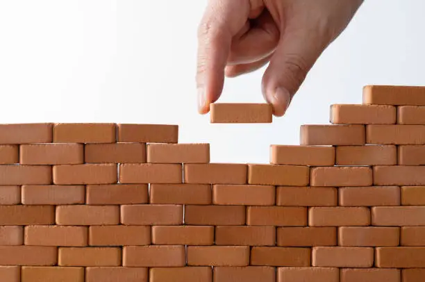
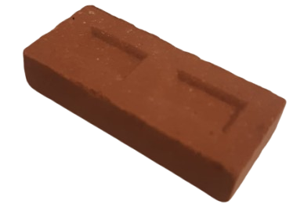

Mais sobre a MiniBricks
A MiniBricks nasceu com o propósito de unir sustentabilidade, educação e diversão em um só produto.
Nosso objetivo é oferecer brinquedos que não apenas entretenham, mas também transmitam valores importantes como criatividade, responsabilidade e consciência ambiental.
Os tijolinhos são pensados para serem seguros, atrativos e acessíveis, incentivando a aprendizagem ativa em casa ou na escola.
O que é MiniBricks?
MiniBricks são brinquedos educativos em forma de tijolinhos, feitos com materiais recicláveis e seguros para crianças. Eles ajudam no desenvolvimento da criatividade, coordenação motora e consciência ambiental desde cedo.
Como funciona?
As crianças podem montar e desmontar estruturas, criando seus próprios brinquedos e aprendendo sobre sustentabilidade. Os tijolinhos são leves, fáceis de manusear e vêm em diversas cores e formatos.

Benefícios
- Estimula a criatividade
- Ajuda no desenvolvimento motor e cognitivo
- Ideal para a aplicação no ambiente escolar
Contato
Para mais informações, entre em contato conosco:
- E-mail: contato@minibricks.com
- Instagram: @minibricksoficial